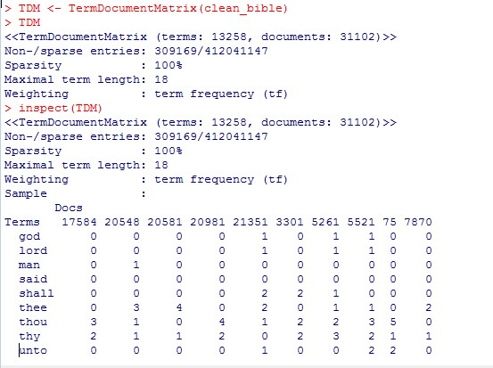
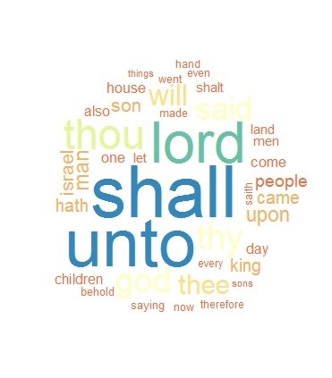
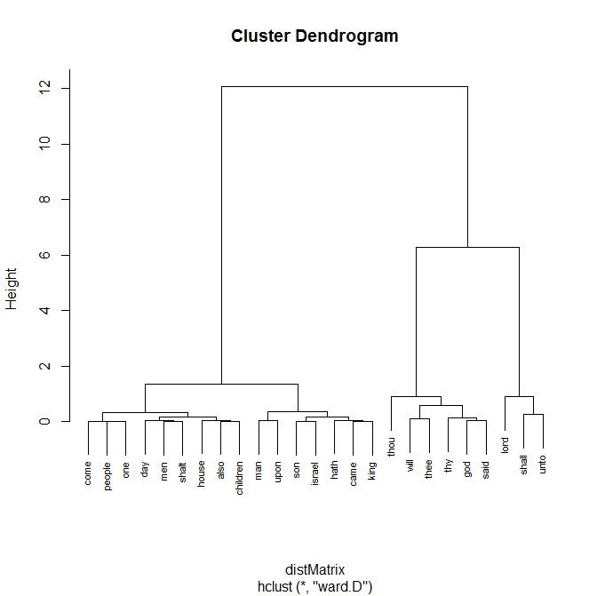

Bible prophecy has always been a topic of interest to me. I read a book titled ‘Bible Code’ where the author believed predictions were buried in the text of the Bible. He believed that by using computers and algorithms you could unlock secrets and that he may be able to crack the “code” and find the date of Armageddon.
Years later I’m doing course work while working in the Data Science field and I realize the Bible would be an interesting choice for a text mining topic. I intend on using R for starters, but also intend on using Python to reproduce results. First thing first, we’ll look at the data and the prep needed.
The Data
I’m just going to use a text translation of the King James version of the Bible currently in a text file. The file can be found at http://www.sacred-texts.com/bib/osrc/ . I intend on importing the text file and concatenating all of the lines into a single string. I’ll then use the tm package to prepare the data by removing punctuation, numbers, whitespace and stemming the document to remove affixes from the words. I can then create a Term Document Matrix to do further analysis. That will be me starting point. Let’s begin!
CLEANING
I begin by downloading the text file and noticing each line begin with chapter and verse name. I don’t want these included in the process. I haven’t imported the file yet so sometimes I find Excel as an easier option to change a file such as this. I can just open the text file in Excel and separate the data since it seems to be tab separated and also uses ‘|’ before the actual verse. It literally takes more time to explain this process than to actually do it.
With the file saved as a text file, I’m now ready to import it into R and use the readLines function. Taking a look at the head of the text file, I can already see there needs to be quite a bit of cleanup. Since I’m going to be exploring other versions of the bible down the road, I’ll create a function that I can save and reuse in the future. First, I’ll convert the document into a corpus with the following commands:
doc.vec <- VectorSource(bible)
doc.corpus <- Corpus(doc.vec)
The function I'll creat is as follows:
clean_corpus <- function(corpus){corpus <- tm_map(corpus, removeNumbers)
corpus <- tm_map(corpus, tolower)
corpus <- tm_map(corpus, removePunctuation)
corpus <- tm_map(corpus, removeWords, stopwords("english"))
corpus <- tm_map(corpus, stripWhitespace)
return(corpus)
}
clean_bible <- clean_corpus(doc.corpus)
Applying this function will remove numbers, punctuation, stopwords, whitespace and convert the letters to lowercase. I can then stem the document and I should be ready to create a Term Document Matrix (TDM). The results are as follows (screenshot of code):
Exploration
We can now start exploring questions like what are the most frequent terms found in the Bible? The following example finds the words that occur more than 2000 times.

We can also create visualizations. One example could be a word cloud using the following code:
m1 <- as.matrix(TDM)
word.freq <- sort(rowSums(m1), decreasing=T)
wordcloud(words=names(word.freq), freq=word.freq, min.freq=1000,random.order=F, scale=c(5, .1), colors=brewer.pal(9, "Spectral"))
Which creates this:
We can also create a document term matrix (DTM). Using the DTM we can create a dendogram to show common word associations. The code is as follows:
DTM <- DocumentTermMatrix(clean_bible)dtmsort <- sort(colSums(as.matrix(DTM)), decreasing=TRUE)
dtmsortcut <- dtmsort[1:25]
m2 <- as.matrix(dtmsortcut)
distMatrix <- dist(scale(m2))
fit <- hclust(distMatrix,method="ward.D")
plot(fit, cex=0.67)
This creates this dendogram:
More to come...
Our journey is just beginning. We'll tackle more detailed questions next!